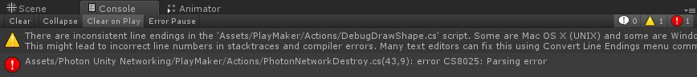
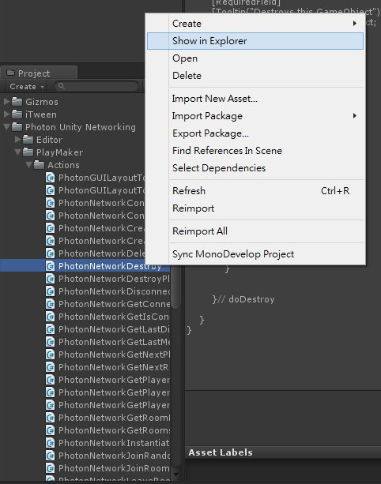
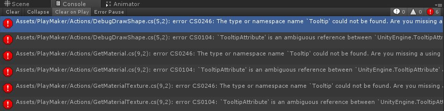
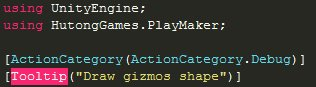
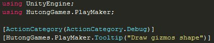

在測試導入 PlayMaker 1.7.7 後若出現以下 Error Code
Assets/Photon Unity Networking/PlayMaker/Actions/PhotonNetworkDestroy.cs(43,9): error CS8025: Parsing error

解決方法如下：
先開啟該腳本的資料夾位置

使用記事本開啟腳本並儲存後
該 Error Code 即消失
另外若做了修正後
出現以下 Error Code
Assets/PlayMaker/Actions/DebugDrawShape.cs(5,2): error CS0246: The type or namespace name `Tooltip’ could not be found. Are you missing a using directive or an assembly reference?
Assets/PlayMaker/Actions/DebugDrawShape.cs(5,2): error CS0104: `TooltipAttribute’ is an ambiguous reference between `UnityEngine.TooltipAttribute’ and `HutongGames.PlayMaker.TooltipAttribute’
Assets/PlayMaker/Actions/GetMaterial.cs(9,2): error CS0246: The type or namespace name `Tooltip’ could not be found. Are you missing a using directive or an assembly reference?
Assets/PlayMaker/Actions/GetMaterial.cs(9,2): error CS0104: `TooltipAttribute’ is an ambiguous reference between `UnityEngine.TooltipAttribute’ and `HutongGames.PlayMaker.TooltipAttribute’
Assets/PlayMaker/Actions/GetMaterialTexture.cs(9,2): error CS0246: The type or namespace name `Tooltip’ could not be found. Are you missing a using directive or an assembly reference?
Assets/PlayMaker/Actions/GetMaterialTexture.cs(9,2): error CS0104: `TooltipAttribute’ is an ambiguous reference between `UnityEngine.TooltipAttribute’ and `HutongGames.PlayMaker.TooltipAttribute’

解決方法如下：
點選 Error Code 進入腳本後，將腳本內的 Tooltip 更改為 HutongGames.PlayMaker.Tooltip


重複以上動作直到未產生 Error Code